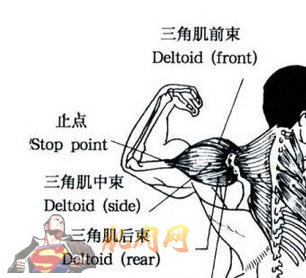
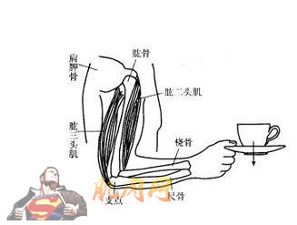
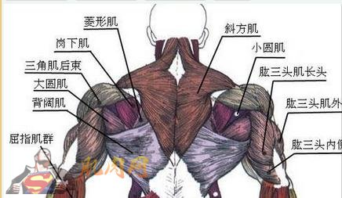
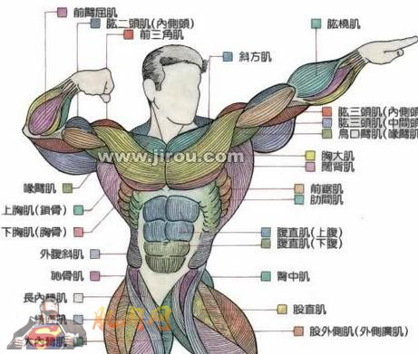

今天大家需要休息一天，让肌肉有修复和恢复的时间。今天我们顺便讲一些肌肉解剖的知识给大家。内容可能会比较枯燥，大家可以收藏起来，以后用得着。
第六天：休息 （讲解肌肉解剖知识）
肩部--有三个头
三角肌前束：推荐动作，前平举，如果你这个地方薄弱就要先开始这个动作
三角肌中束：推荐动作，侧平举，这个动作锻炼你的肩部，却会让你的腰部看起来更小
三角肌后束：推荐动作，俯卧侧平举，比较难的孤立动作，预防不必要的伤害，用小重量。
这些都属于孤立的动作，意思是，他们一次只能对一个肌群起作用。
而复合动作，一次可以对很多肌群起作用，比如深蹲，硬拉和推举等。

肱三头肌—依然是有三个头
前：推荐动作，三头下压
中：推荐动作，仰卧头上臂屈伸
后：推荐动作，站姿颈后臂屈伸
当然你也可以尝试头上绳索臂屈伸和近距卧推。不要忽略三头的锻炼，他们几乎承载你你手臂70%的力量!
肱二头肌—有两个头
内侧：推荐动作，宽距杠铃弯举
外侧：推荐动作，锤式弯举
都可以起到作用的，推荐动作，牧师凳弯举

后背—有四个目标区域
斜方肌：推荐动作，耸肩
背阔肌：推荐动作，绳索下拉，可以增加厚度，和达到V字身材效果
背部：推荐动作，坐姿绳索划船—可以增加厚度和宽度，也可以进行俯身划船，单臂哑铃划船等
下背部：推荐动作，哑铃硬拉，山羊挺身

胸部—有三个目标区域
上部：推荐动作，平板或者上斜哑铃飞鸟
中部：推荐动作，哑铃推举—手臂下落在胸部中间区域
下部：推荐动作，绳索十字夹胸和下斜推举
腹部—两个目标区域
上部：推荐动作，负重卷腹—这个重量要让你在很少的次数能达到力竭。
下部：推荐动作，仰卧举腿和悬垂腿举
不要锻炼腹部斜肌，因为在其他的动作中，都有锻炼到他们，这可以防止让你看起来身体方方正正的。
一周锻炼腹肌一次，就像其他肌群一样，并且使用大重量努力训练他们。
腿部—4个目标区域
四头肌：推荐动作，腿屈伸---可以锻炼你股四个头肌肉组织
四头和腘绳肌：推荐动作，深蹲和腿举—这属于复合动作
四头，臀肌和腘绳肌：推荐动作，哑铃和杠铃箭步走—复合动作
腘绳肌：推荐动作，腿弯举—孤立动作
小腿：推荐动作，坐姿提踵或站姿提踵
用大重量和多次数，至少完成20次
饮食计划参考：（提示，因为翻译外文，食谱为西式菜谱，大家可以根据自己的实际情况修改或者参考。）
早餐
1：鸡蛋蛋白
2：燕麦
3：咖啡
第二餐
1：瘦牛排
2：糙米
第三餐
1：鸡胸肉
2：甜红薯
3.西兰花
第四餐
1：鱼
2：糙米
3：西兰花
第五餐
1：鸡胸肉
2：甜红薯
3：西兰花
训练前餐
1：罗非鱼
2：糙米
3：咖啡
训练后补剂
1：蛋白粉
2：肌酸
晚餐
1：牛排
2：西兰花
睡前
1：酪蛋白